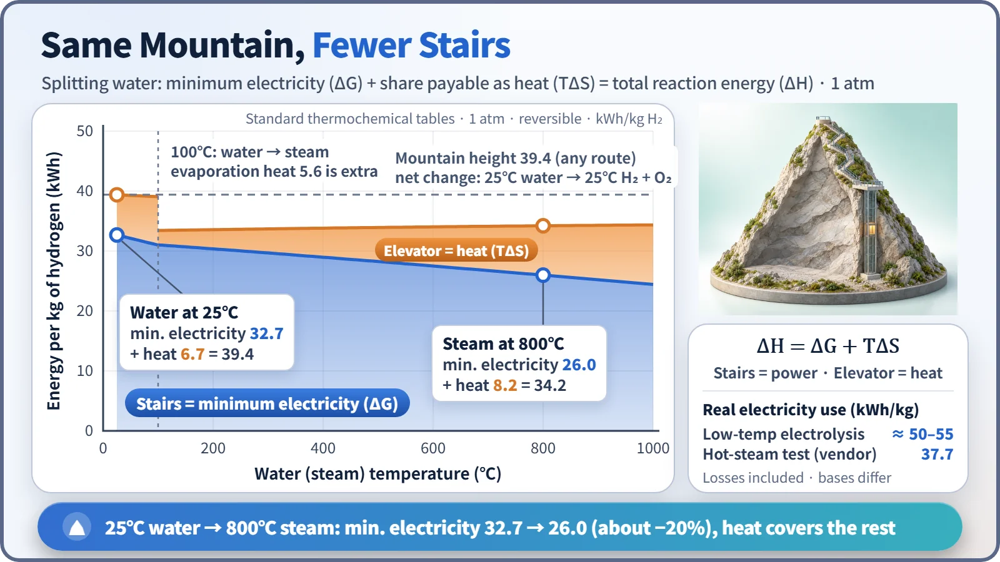
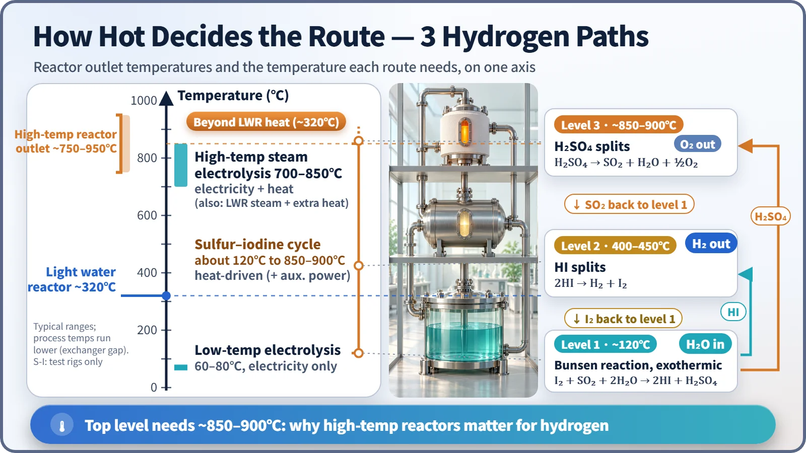

Society, Environment & the Future · 284
Stairs or Elevator? — Why Temperature Matters in Nuclear Hydrogen Production
The total energy to split water stays the same; higher temperature shifts the burden from expensive electricity to reactor heat.
Splitting water takes about 39.4 kWh per kilogram of hydrogen, and that total barely changes with temperature. What changes is the split: the share that must be electricity falls from 32.7 kWh at 25°C to 26.0 kWh at 800°C, and heat covers the rest. Because a reactor makes heat first and electricity only at about 33% efficiency, hotter reactors can make hydrogen more efficiently. [1]
One summit, two ways up
Split nine one-liter bottles of water and you get about 1 kilogram of hydrogen, enough for a hydrogen car to drive a little over 100 kilometers. Water is everywhere; the problem is the effort. Water is very stable, and pulling it apart takes about 39.4 kWh per kilogram of hydrogen.
Think of it as climbing a mountain. The summit is 39.4 kWh high, and there are two ways up: stairs you climb on foot, and an elevator that carries you partway. The stairs are electricity; the elevator is heat.
ΔH = ΔG + TΔS
ΔH is the total energy (the height of the mountain), ΔG is the minimum share that must be supplied as work such as electricity even with no losses (the stairs), and TΔS is the share that can be supplied as heat (the elevator). Because temperature T multiplies the last term, the hotter the mountain, the higher the elevator goes. [1]

| Condition | Minimum electricity (ΔG) | Heat share (TΔS) | Reaction total (ΔH) |
|---|---|---|---|
| Liquid water, 25°C | 32.7 kWh/kg | 6.7 kWh/kg | 39.4 kWh/kg |
| Steam, 800°C | 26.0 kWh/kg | 8.2 kWh/kg | 34.2 kWh/kg (+ about 5.6 of evaporation heat) |
Starting with room-temperature water and ending with room-temperature hydrogen and oxygen, the total is 39.4 whichever route you take once all heat in and out is counted. The summit is just as high; only the climb on foot gets shorter. That matters because a reactor's direct product is heat: a typical light water reactor converts heat to electricity at about 33%, so 1 kWh of electricity costs about 3 kWh of heat.
Route one: stairs all the way
Low-temperature electrolysis runs electricity through water at about 60–80°C and works with any reactor. At the Nine Mile Point nuclear plant in New York State, a 1.25 MW electrolyzer began producing about 560 kg of hydrogen a day in March 2023, about 54 kWh per kilogram, in line with the 50–55 kWh commonly quoted in industry. [2]
That is far above the minimum of 32.7 because electrode and electrolyte losses leak away as heat. And since two-thirds of the reactor's heat is already gone by the time the electricity is made, reactor heat to hydrogen comes to roughly 25%. [5]
Route two: switch to the elevator with hot steam
High-temperature steam electrolysis splits steam at 700–850°C with a ceramic electrolyte. The heat shrinks the stairs, and hot electrode reactions lose less. A solid oxide electrolyzer tested at Idaho National Laboratory with steam simulating nuclear plant conditions was reported by its manufacturer at about 37.7 kWh per kilogram. The measurement basis differs from the 50–55 of low-temperature electrolysis, so compare cautiously, but it clearly saves electricity. [3]
A hot reactor can also supply the elevator section, boiling and heating the steam, directly with its own heat. That is why reactors with outlet temperatures of about 750–950°C, such as high-temperature gas-cooled reactors, are often named as partners; linking light water reactor steam with extra heating is also being studied.
Route three: a factory with a different temperature on each floor
Splitting water with heat alone in one step takes temperatures well above 2,000°C. A thermochemical cycle links several reactions in a loop so each runs at a manageable temperature, driven by heat apart from auxiliary power. The leading example is the sulfur–iodine (S-I) cycle.
On the first floor (about 120°C), water, iodine and sulfur dioxide form hydrogen iodide and sulfuric acid. On the second floor (about 400–450°C), hydrogen iodide splits and hydrogen comes out. On the top floor (about 850–900°C), sulfuric acid decomposes and oxygen comes out. Sulfur and iodine return to be reused, so only water is consumed.

| Level | Temperature | Reaction |
|---|---|---|
| 1 (Bunsen, exothermic) | about 120°C | I₂ + SO₂ + 2H₂O → 2HI + H₂SO₄ |
| 2 | about 400–450°C | 2HI → H₂ + I₂ |
| 3 | about 850–900°C | H₂SO₄ → SO₂ + H₂O + ½O₂ |
A light water reactor at about 320°C can't reach the top floor. In 2019 the Japan Atomic Energy Agency produced about 30 liters of hydrogen per hour for 150 hours straight in an electrically heated test facility, not connected to a reactor; materials that withstand hot sulfuric acid and hydrogen iodide remain a challenge. [4]
Two common mix-ups
"Raising the temperature lowers the energy needed" is only half right: the height of the mountain stays about the same, and what shrinks is the expensive electricity share, taken over by heat. And nuclear hydrogen isn't only for high-temperature reactors: low-temperature electrolysis already runs on today's light water reactors. Either way, reactor coolant never flows into the hydrogen feedstock; only heat crosses through heat exchangers.
How far up are we now?
Low-temperature electrolysis is in demonstration beside nuclear plants, high-temperature steam electrolysis is at test scale of a few megawatts or less under simulated plant conditions, and thermochemical cycles are at laboratory scale. Japan is working toward connecting a hydrogen plant to its High Temperature Engineering Test Reactor (HTTR), with the first goal of establishing technology to couple a reactor and a hydrogen plant safely. [4]
Key takeaways
Whether you take the stairs all the way or ride the elevator partway, the summit is the same. A hotter reactor lets heat carry more of the climb, trimming the electricity share from 32.7 to 26.0 kWh per kilogram between 25°C and 800°C, which is why temperature matters so much in nuclear hydrogen.